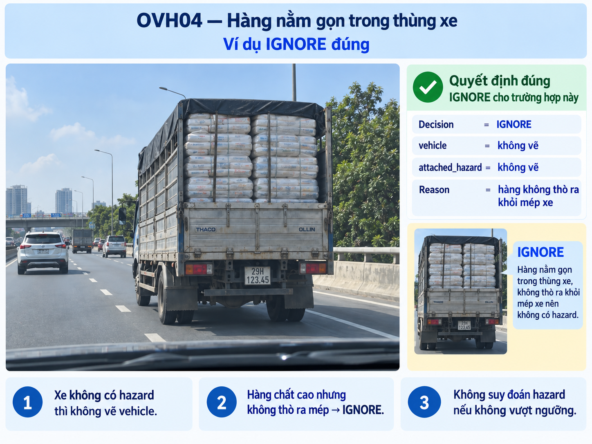
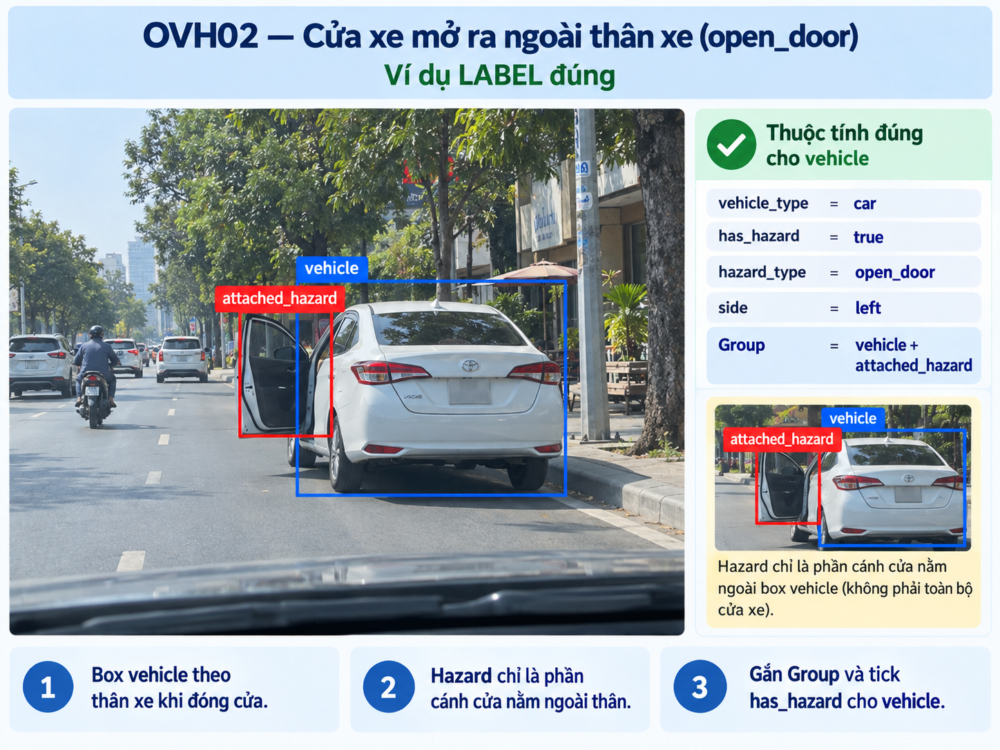
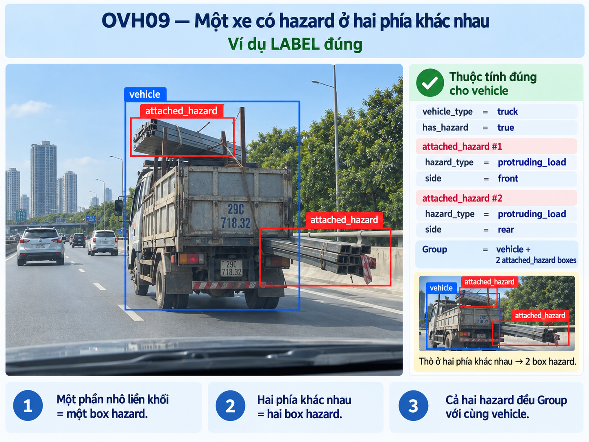
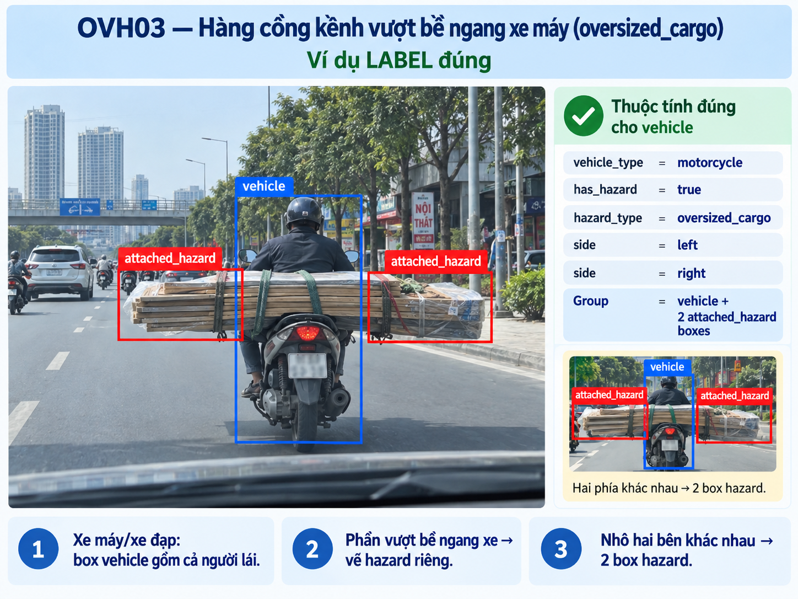
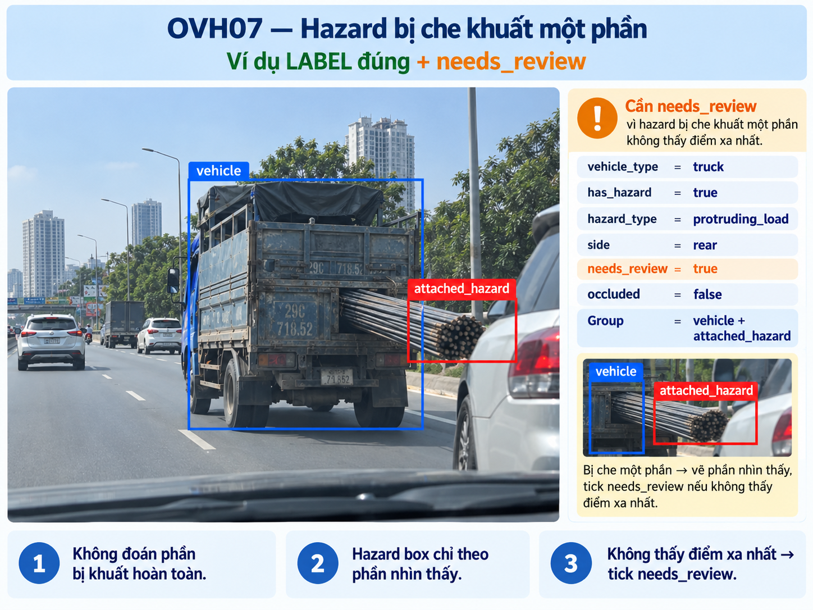
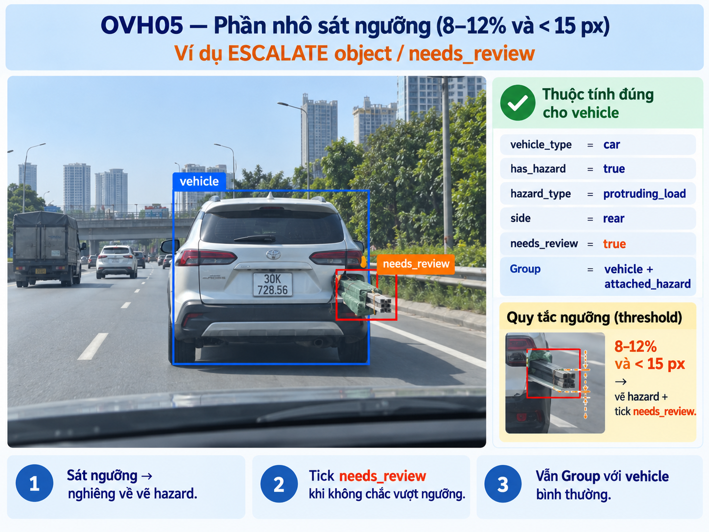
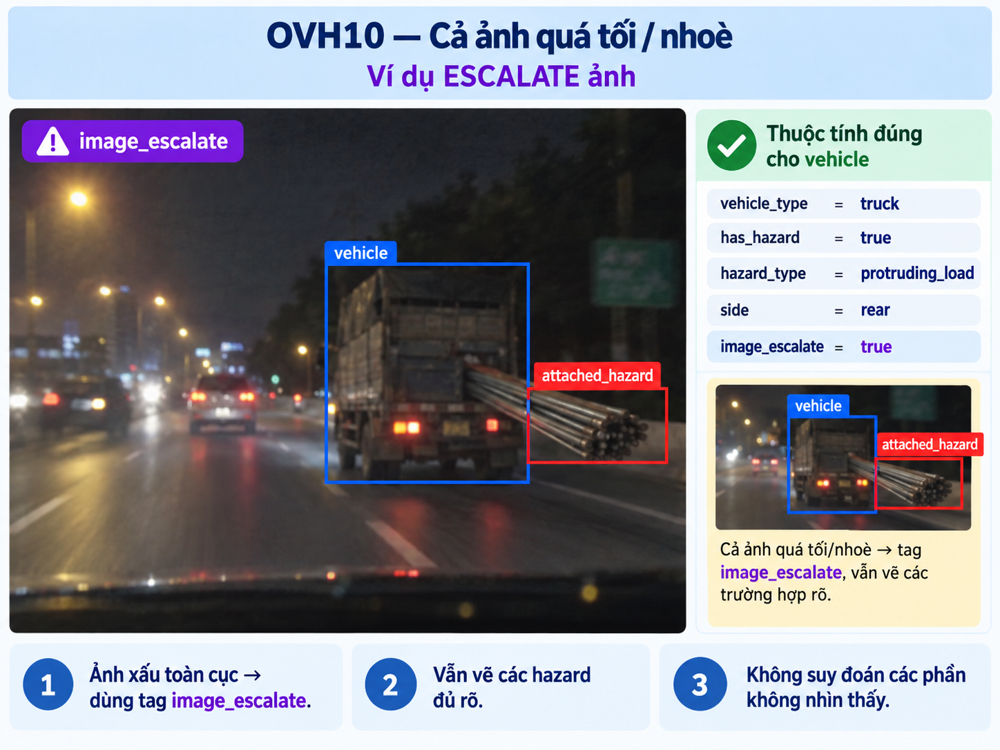

Perception và distance estimation
Vehicle chỉ biểu diễn thân xe chuẩn để mô hình không học sai kích thước xe.
Annotation guideline
Một task hẹp: nhận diện phần hàng/vật liệu chở trên xe và nhô rõ phía sau thân xe trong ảnh dashcam tĩnh.
1 · Objective + scope
Vehicle chỉ biểu diễn thân xe chuẩn để mô hình không học sai kích thước xe.
Attached_Hazard biểu diễn vùng không gian bị chiếm thêm ở phía sau xe.

1 · Downstream users
3D object detection và depth estimation dùng box Vehicle ôm sát thân xe chuẩn để ước lượng đúng kích thước xe và khoảng cách từ camera.
Nếu box Vehicle nuốt cả hàng nhô, mô hình có thể suy ra sai kích thước và khoảng cách xe.
Obstacle avoidance dùng Attached_Hazard để biết vùng không gian bị chiếm thực tế phía sau xe, đặc biệt khi xe tự lái bám đuôi.
Nếu bỏ sót hazard, hệ thống có thể coi vùng nguy hiểm là khoảng trống và va chạm.
Vehicle: thân xe gốc, không bao hàng nhô.
Attached_Hazard: phần hàng nhô nhìn thấy phía sau.
Parent_ID: cho biết hazard di chuyển cùng xe nào, không phải vật cản tĩnh.
Parent_ID.1 · Classes and attributes
Geometry: Rectangle.
Box ôm thân xe gốc nhìn thấy. Chỉ tạo khi xe có ít nhất một Attached_Hazard hợp lệ.
Không có vehicle type, occlusion, truncated hoặc attribute bổ sung.
Geometry: Rectangle.
Box ôm phần hàng/vật liệu nhìn thấy nhô phía sau xe, không bao thân xe.
Không có hazard type, direction, certainty hay needs_review.
Parent_ID trên mỗi Attached_HazardĐây là attribute bắt buộc. Điền ID của Vehicle đang chở/gắn khối hàng đó. Nếu một xe có nhiều hazard, tất cả hazard phải dùng cùng Parent_ID.
Trong CVAT, dùng Group shapes để nhóm Vehicle và các hazard cùng xe, sau đó kiểm tra group có đúng trước khi lưu.
Parent_ID đúng: IGNORE, không tạo Attached_Hazard mồ côi.1 · Scope boundary


2 · Annotation unit
Chỉ tạo cho xe có ít nhất một hazard hợp lệ.
Một cụm hàng liên tục/chồng liền nhau là một box hazard.
Tạo box riêng nếu từng khối cùng thỏa scope và đều nhô phía sau.

Parent_ID và được Group shapes để kiểm tra trực quan.3 · Geometry
VehicleAttached_Hazard
Vehicle để bao toàn bộ hàng nhô. Tolerance: lệch tối đa 2 px mỗi cạnh.4 · Threshold and parent relation
Parent_ID của Vehicle. Không xác định được xe cha thì không tạo hazard.4 · CVAT workflow
5-7 · Decision rule
Không có decision `UNKNOWN`, `needs_review`, `hazard_type`, `side` hay `image_escalate` trong task này.
6 · Visibility / occlusion



8-10 · Before export